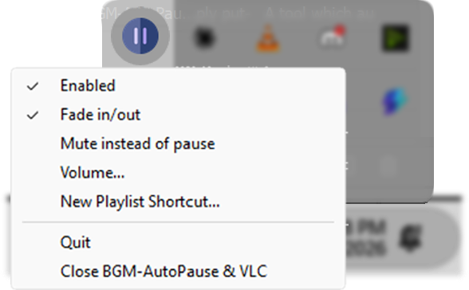

The Purpose of BGM-AutoPauser is simply put-
A tool which automatically pauses/resumes background music depending on if there is sound being currently played (eg. a video, a game, live stream, music etc.)
In Order for this to work all you need is VLC Media Player Installed.
VLC media Player can be found at - https://www.videolan.org/vlc/
This app has no ‘window’ to open, rather it sits in the system tray, (In the bottom right corner of your taskbar!)
Download Here! Just a one click setup and ready to use!
- LATEST RELEASEDirect from the GitHub releases page
